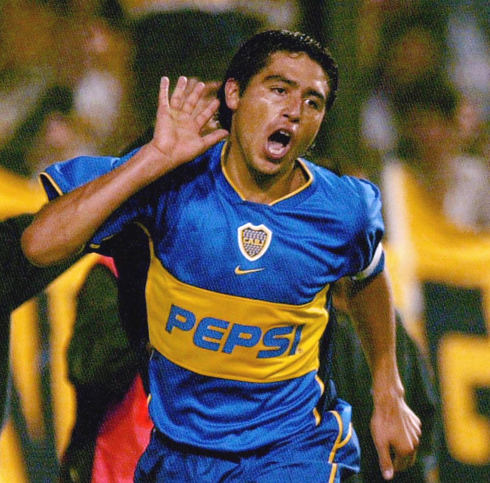

Biografía
Juan Román Riquelme (nacido el 24 de junio de 1978 en Don Torcuato, Argentina) es un exfutbolista y actual dirigente deportivo argentino. Es considerado uno de los mejores futbolistas de la historia del fútbol argentino.
Primeros años
Riquelme comenzó su carrera en el club Boca Juniors, donde se destacó por su visión de juego y su capacidad para manejar los tiempos del partido. Fue un jugador clave en el fútbol argentino, siendo reconocido por su elegancia y su creatividad en el campo.
Carrera internacional
A lo largo de su carrera, Riquelme jugó en varios equipos, incluyendo el FC Barcelona y el Villarreal CF, además de ser una pieza fundamental de la selección de fútbol de Argentina, con la que participó en diversas competiciones internacionales.
Logros
- Ganador de la Copa Libertadores con Boca Juniors en varias ocasiones.
- Campeón de la Copa América 2007 con la selección de Argentina.
- Subcampeón del Mundial de 2010 como parte de la selección argentina.
Estilo de juego
Riquelme era reconocido por su visón de juego y su capacidad para distribuir el balón, creando jugadas decisivas desde el mediocampo. Su juego elegante y su precisión en los pases lo convirtieron en uno de los jugadores más destacados de su época.